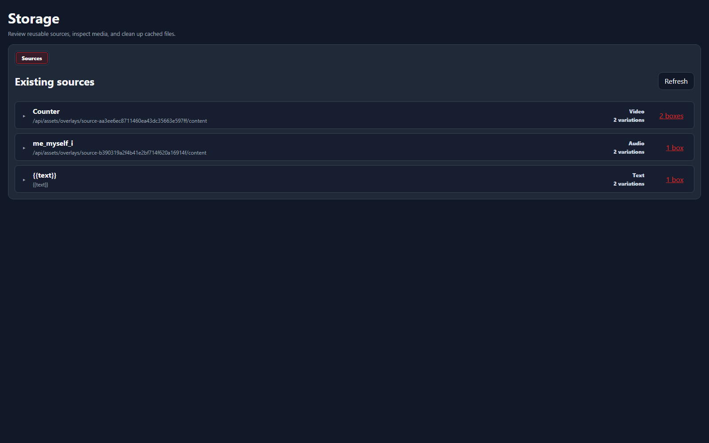

Sources
Storage
Storage has two tabs: Sources for reusable media definitions and Variables for defaults, current values, and trigger usage.
Jump to the Variables tab or read the full Variables guide.
Defined Sources

Use this page when a reusable source needs to be checked outside the overlay editor. The top card is the source definition; expand it to inspect the actual variations that can be assigned to boxes.
RefreshReloads defined sources, overlay usage, and cache state from disk.Source cardShows the reusable source name, content path/token, type, variation count, and assignment count.Variation cardsAppear below an expanded source. Variations are the concrete source entries that boxes can use.Assigned boxesShows which overlay boxes reference the source or variation. Unassigned means it is not currently used by a box.PreviewAvailable for previewable variations. Opens a floating preview so you can test the source without editing an overlay.Delete iconDeletes the selected source or variation after confirmation.Usage
The usage popover answers the question: which overlays and boxes still depend on this source?
Boxes countOpens the usage popover for that source.Source usageLists the overlays and boxes that reference the selected source.CloseCloses the floating usage panel and returns to the source table.Check usage before deleting a source or variation. A source may have multiple variations, and boxes bind to the concrete variation they need.
Preview
The preview popover renders the selected source and exposes enough settings to confirm whether the source itself is healthy before blaming OBS or trigger bindings.
PreviewOpens a floating preview for the selected source.Regular / CachedAvailable for sources that have both an original and a cached asset. Remote URL media now loads lazily for the session instead of being kept in a persistent disk cache.SettingsShows source metadata and render settings beside the preview.Preview bodyDisplays the source as NyankoBot can render it: image, video, audio, URL, or other previewable media.Cleanup
Delete CacheRemoves a cached asset when that source type has one. Remote URL media is session-only and may need to load again when used.Delete SourceDeletes the reusable source definition after confirmation. Check source usage first.Variables tab
Open Variables in Storage to inspect definitions made in Settings → Variables. Search by name or use All, Persistent only, Season only, or Arguments only.
Select a variable to see the triggers and actions that assign or reference it. The inspector shows its default and, for persistent variables, its current stored value. Edit either value and select Save values; argument variables have no current value outside a trigger run. Lists and objects use JSON editors, while dictionaries expose editable key and value rows.